- po 15 stupňov - uhol úsečky sa mení po 15 stupňoch
- napojiť na existujúcu krivku - každá nová krivka bude začínať v koncovom bode predošlej a spojí sa s ňou do jedného objektu
- nová krivka - musíme určiť počiatok i koniec čiary.
- douzavrieť - spojí počiatočný bod objektu s koncovým a vytvorí plošný objekt s výplňou prázdnou (zatiaľ).
- izolované úsečky
- Vyberiem si úsečku bez znaku +
- Ak mám zvolenú úsečku so znakom plus môžem v alternatívnom paneli vybrať - nová krivka
- Nájdem polohu prvého bodu, stlačím ľavé tlačítko myši a ťahaním presuniem myš do polohy koncového bodu úsečky. Tam myš pustím.
- Ak pri kresbe sólo úsečky je označená úsečka alebo had má program zatlačené v alternatívnom paneli "nadpojiť na predchádzajúcu" Ak začnem novú úsečku v niektorom z koncových bodov tejto úsečky alebo "hada" program, naša nová úsečka sa prilepí ku tejto úsečke.
- nadväzujúce úsečky (had)
- Vyberiem si úsečku so znakom +
- kliknem na miesto kde má úsečka končiť, vytvorí sa nová úsečka a had sa predĺži o ďalšiu úsečku.
- na zrušenie tohoto predlžovania sa hada stlačíme napríklad "bielu šipku"
(rozbiť hada na samostatné celky pozri dole)
- izolované krivky
- zvolím 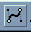,
nájdem počiatočný bod krivky a ťahaním určím smer dotyčnice a veľkosť zakrivenia (!nie koncový bod!).
Pustím tlačítko myši a podobne urobím aj v koncovom bode krivky. Vznikne krivka.
(Ak niektorý bod určím len kliknutím nie je v ňom predpísaná dotyčnica ani zakrivenie.)
(krivku možno dodatočne tvarovať v režime "Tvarovanie objektov")
podobne ako aj pri úsečkách aj tu možno v tomto režime kresliť aj nadväzujúce krivky. - nadväzujúce krivky
- Vyberiem si úsečku so znakom + 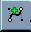
Určujem len koncový bod bod krivky. Vznikne krivka had, kde nadpojenia sú maximálne hladké (symetrické). Spôsoby nadpájania čiar môžu byť:- symetrické - najviac hladký prechod, derivačné úsečky sú rovnako veľké a opačne orientované
- hladké - hladký prechod, deriačné úsečky ležia na spoločnej priamke a sú opačne orientované
- ostré - derivačné úsečky môžu ísť ľubovoľne
- nadväzujúce krivky
- Vyberiem si úsečku so znakom +
- Určujem len koncový bod bod krivky. Vznikne krivka had, kde nadpojenia sú maximálne hladké (symetrické).
- Celého hada možno editovať v režime "Tvarovanie objektov"
- posúvať uzly
- pridávať uzly
- rušiť uzly
- tvarovať - meniť zakrivenie
- robiť "kladivom" na samostatné čiary
- symetrické - najviac hladký prechod, derivačné úsečky sú rovnako veľké a opačne orientované
- hladké - hladký prechod, deriačné úsečky ležia na spoločnej priamke a sú opačne orientované
- ostré - derivačné úsečky môžu ísť ľubovoľne
- pridávať body, uberať body
- meniť polohu bodov
- zmeniť krivku na úsečku
- zmeniť úsečku na krivku
- nastaviť režim nadpájania sa úsečiek
- symetrický - "paličky" derivácií sú spoločné
- hladký - "paličky" derivácií sú kolineárne
- ostrý - derivácie sú nespojité
- po zapnutí režimu 15 stupňov paličky derivácií sa menia po 15 stupňov
- čiaru možno rozdeliť na sólo úsečky
- uzavrieť krivku
- Predpríprava -
- Nastavím si hustotu siete a dám sieť zobraziť Z galérie zvolím Pen a zvolím hrúbku čiary 1mm, farba červená
- Kreslenie úsečky
- nakreslím v strede úsečku - moc sa nad veľkosťou nemusím trápiť, vždy sa dá zväčšiť alebo zmenšiť
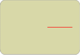 - Otáčanie
- označím úsečku v režime biela šipka-"Výber a editácia objektov"
V palete nástrojov zatlačím duplikačný režim
zvolím akciu otáčanie
v ľavom bode úsečky (stred otáčania) stlačím ľavé a ťahám myš v smere úsečky (nezáleží až kam) (vytvorí sa rameno otáčania) pri stlačenom ľavom tlačítku myši teraz pohybom myši hore-dole určujem uhol otočenia objektu - úsečky
ak mám stlačené Ctrl bude uhol násobkom 15-tich stupňov
pustím tlačítko myši a pribudla nová úsečka
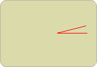 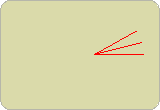
Ak postup budem opakovať "dosť" dlho môžem vytvárať ďalšie lupene (Ak chceme rovnaké uhly držíme stlačené Ctrl, alebo ideme myšou po tej istej stope ako predtým) - Otáčanie viacerých objektov naraz
- Kedže postup je dosť únavný skúsime otáčať naraz viac lupeňov.
......označíme lupeňov (napr. 3) - myšou a držíme pri tom Shift
......z troch lupeňov tak jedným otočením získame 6 (tu je režim 15-tich stup. veľmi výhodný)
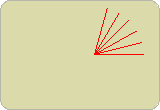 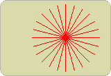
a rovnako zo 6-tich vyrobím 12 atď.
vypneme duplikačný režim - Vertikálna kontrakcia
- Teraz vytvoríme dojem natočenia kvetu - označíme všetky lupene a spodný stredný úchop- štvorček myšou presunieme nahor
a kvetinku trochu natočíme za slnkom (otočenie okolo stredu kvetu o nejaký uhol) 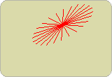
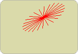
- Kreslenie stonky
- teraz si niekde naboku (môžme aj na stole) nakreslíme stonku a potom ju presunieme pod kvet
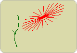 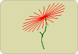
|